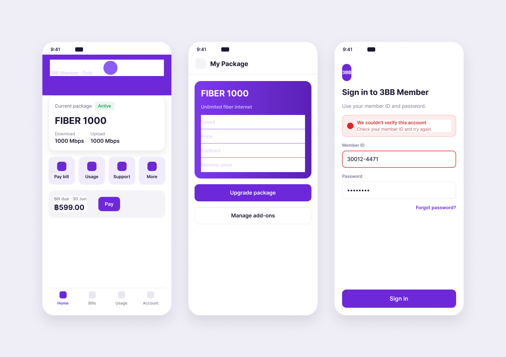
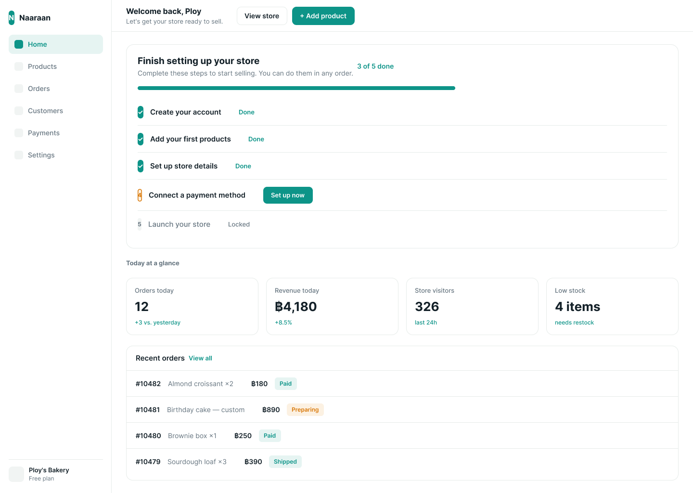

UX/UI · Product Designer — Bangkok
Making the complex,
clear."making the complex, clear." sounds good — until you have to prove it
I design enterprise platforms, data systems, and operational tools. The kind that break when conditions stack — and shouldn't.enterprise tools — where "user-friendly" goes to die
What gets easier
When this kind of work goes well, nothing dramatic happens. Things get easier.
Easier for users to tell what to do next. Easier for developers to see what to build. Easier for QA to test the flow. Easier for the team to decide and keep moving.
Selected work
01Enterprise SaaS·2024·Handed off
Customer Data Platform
Marketers built condition logic that quietly resolved to zero people.
Nothing warned them.
 View case study →
the hardest screen was the one that showed nothing
View case study →
the hardest screen was the one that showed nothing
02Mobile App·2024 – Present·Live on Play Store & App Store
3BB Member
The file had everything.
Except an answer for which version was current.

View case study → design problem zero: which version is real?03Operational UX·2023·Design spec
Counter Service POS
Every button was locked in place. Every flow was fixed.
The only thing left to design was the space between them.
 View case study →
800×600 in 2023 — yes, really
View case study →
800×600 in 2023 — yes, really
04E-commerce·2022·Prototype
Naaraan Store Builder
Sellers didn't fail at features. They failed at sequence.
Setup and daily operations were mixed in one interface — first-day merchants had to think like power users. I separated one-time setup from routine management: setup became a guided path, daily work a cleaner workspace.

Around the table
A screen isn't finished when it looks right.
It's finished when users know what to do, developers know what to build, QA knows what to test, and the team knows what needs to be decided.
The deliverable is rarely just a screen. It's the shared understanding around it.
Working habits
- Start from what's actually there.
- Make a first useful version.
A rough flow on the table beats a precise opinion in the air. - Reduce confusion before adding polish.
- Respect what can't change. Question what can.
- Don't make people relearn what already works.
- Learn enough to make the next decision.
About
I'm Natthapath Damrongsri, a UX/UI designer in Bangkok. I tend to be quiet at the start of a problem: I look at what is already there, ask what is missing, and make something concrete enough for the team to react to. When the work asks for something I do not know yet, I learn enough to make the next decision responsibly.
I also care about how the work is left behind. The next person should be able to see what was decided, what is still open, and where to continue without rebuilding the whole context.
Contact
For product design opportunities, collaborations, or a closer walkthrough of the work.